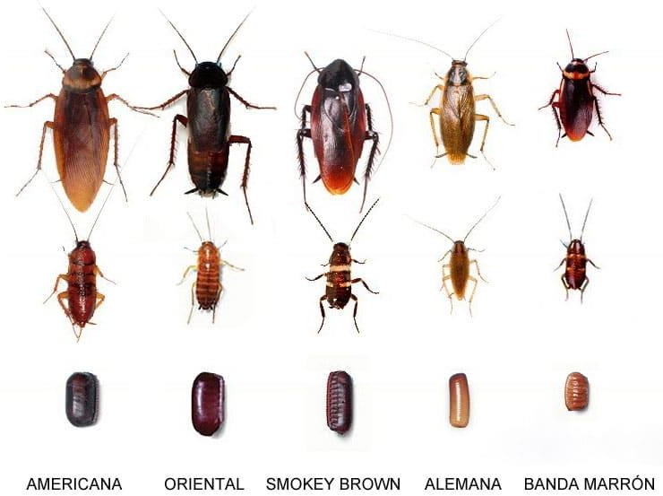
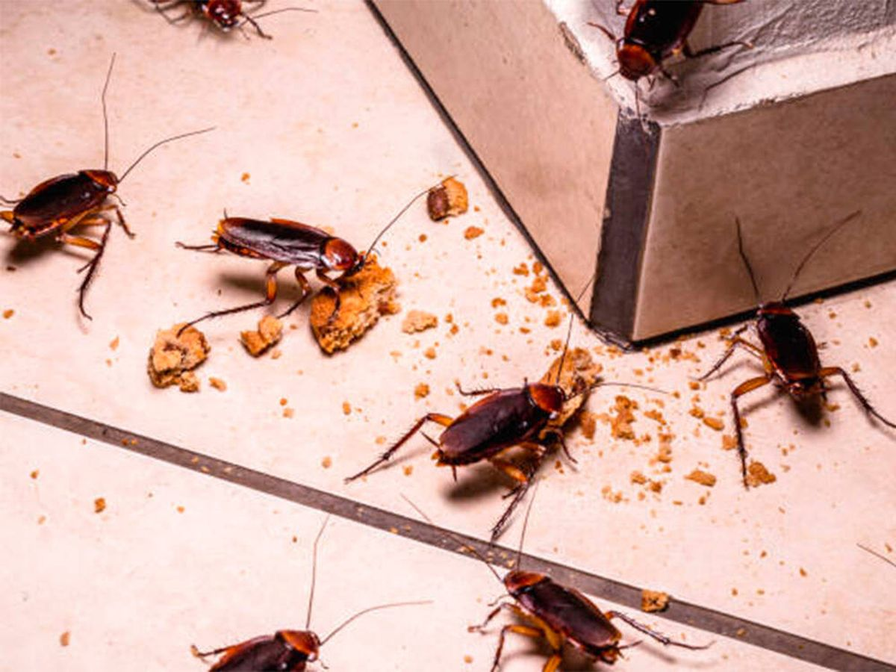
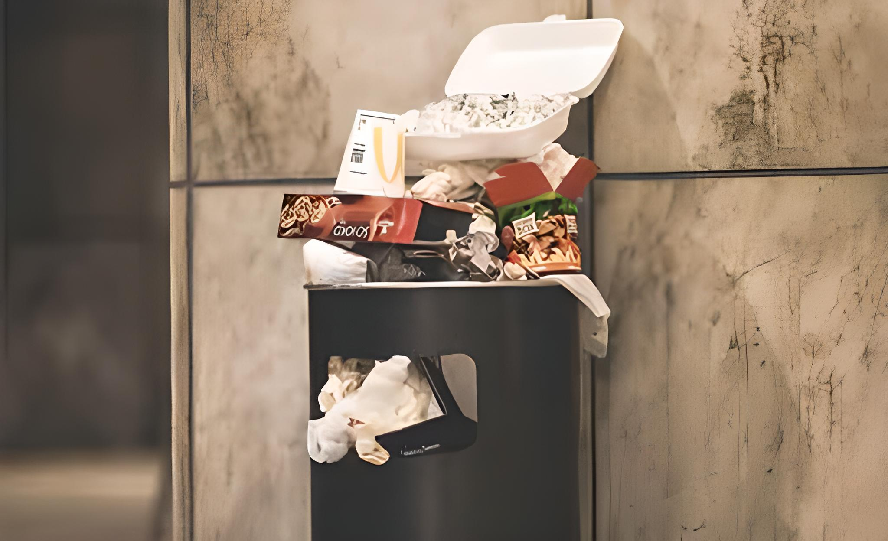
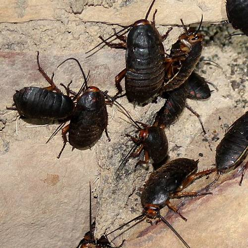
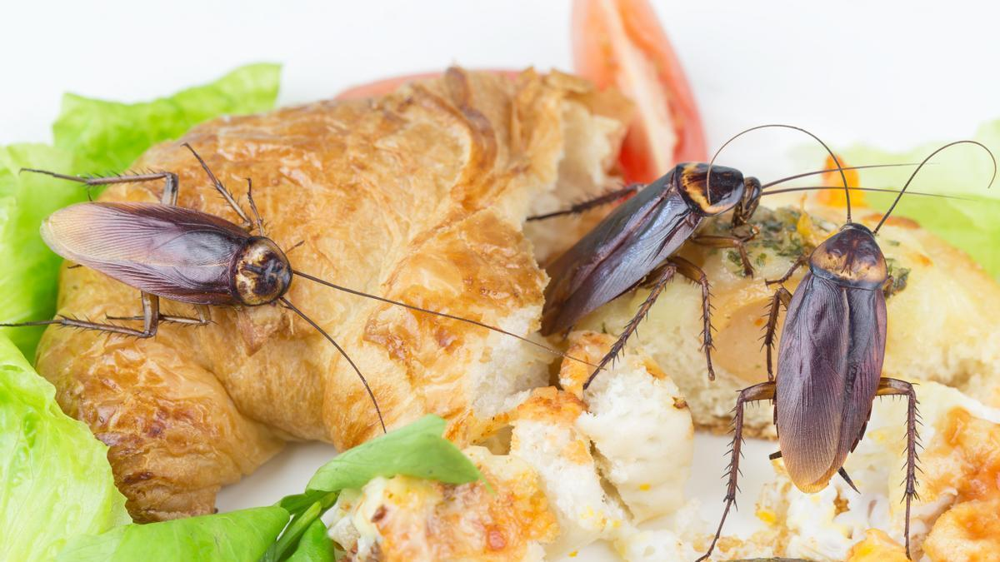
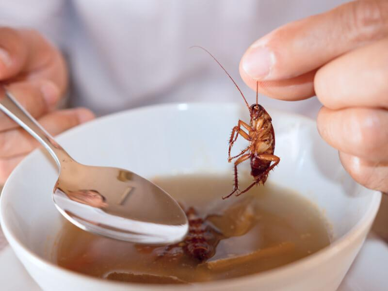
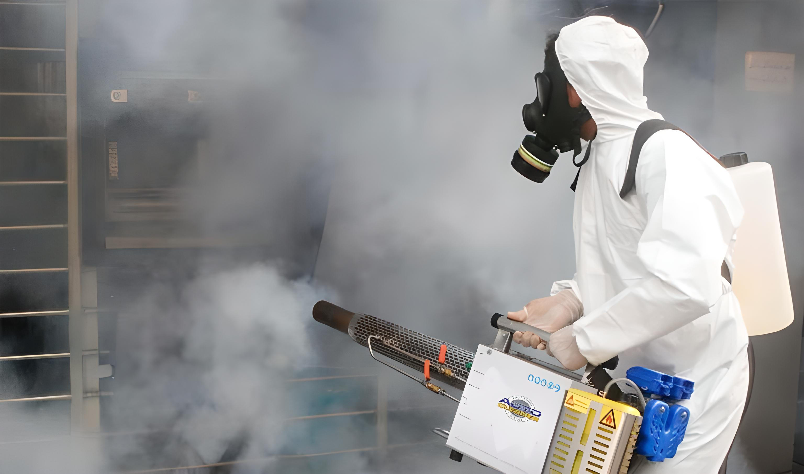

¿Cómo eliminar las cucarachas?
Para eliminar cucarachas no existe ningún método absoluto o ningún «mata cucaracha» que soluciones completamente este problema. Para el control de esta plaga es necesario cumplir 3 pautas para realizar un control integral de plagas. Los cuales son
Existen 3 tipos de cucarachas las cuales son las principales invasoras de lugares donde el ser humano desarrolla sus actividades, provocando riesgo a la salud por ser vectores de enfermedades que buscan contacto directo con nuestro alimentos sin que nos demos cuenta. Identificar es el primer paso para definir que medidas de control deben ser ejecutadas para lograr el control considerando sus hábitos y preferencias en el uso de cebos u otros insecticidas. y formulados
Estas tres especies consisten en la Cucaracha alemana, Cucaracha banda marrón y la Cucaracha Americana. Cada una de estas especies difiere en sus hábitos de alimentación y desarrollo por lo que su identificación es crucial para su correcto control.
Estas tres especies consisten en la Cucaracha alemana, Cucaracha banda marrón y la Cucaracha Americana. Cada una de estas especies difiere en sus hábitos de alimentación y desarrollo por lo que su identificación es crucial para su correcto control.

Cuando decimos «modificar el ambiente», nos estamos refiriendo a todas aquellas acciones realizadas para evitar generar refugios para las plagas, fuentes de alimento y fuentes de agua.
En control de plagas se maneja que mantener limpieza constante dentro de los diversos ambientes cumple con el 60% de responsabilidad en el exterminio de cucarachas. Eliminar fuentes de alimentos como restos de comidas, basureros abarrotados, almacenamiento de alimentos no empaquetados o aislados, mala disposición de residuos orgánicos es una factor determinante en el manejo de las cucarachas.
Por otro lado, ambientes húmedos creados por grifos averiados, caños rotos, sanitarios mojadas y demás lugares húmedos favorecen enormemente la reproducción de las cucarachas, en especial de la cucaracha alemana que encuentra ideal estos lugares para la formación de nidos y llevar a cabo su reproducción.
Otro factor relacionado al ambiente, es el de la presencia de lugares ideales para refugios de los mismo. Basura acumulada, hendiduras y grietas, espacio entre muebles, espacios entre repisas y pared, marcos de puertas averiados son lugares de escondite para las cucarachas donde realizan su reproducción. La eliminación de estos espacios constituye una medida eficaz y segura para reducir la población de cucarachas.
Por lo general, las plagas llegan a nuestra área de lugares contiguos o vecinos donde el control de plagas no es realizado correctamente, muchas veces cumplir todas pautas no es suficiente por las cucarachas siguen llegando de estos lugares. En estos caso es importante realizar el aislamiento del área aplicando diversos métodos para evitar que accedan a través de puertas, ventanas u otros accesos.
En control de plagas se maneja que mantener limpieza constante dentro de los diversos ambientes cumple con el 60% de responsabilidad en el exterminio de cucarachas. Eliminar fuentes de alimentos como restos de comidas, basureros abarrotados, almacenamiento de alimentos no empaquetados o aislados, mala disposición de residuos orgánicos es una factor determinante en el manejo de las cucarachas.
Por otro lado, ambientes húmedos creados por grifos averiados, caños rotos, sanitarios mojadas y demás lugares húmedos favorecen enormemente la reproducción de las cucarachas, en especial de la cucaracha alemana que encuentra ideal estos lugares para la formación de nidos y llevar a cabo su reproducción.
Otro factor relacionado al ambiente, es el de la presencia de lugares ideales para refugios de los mismo. Basura acumulada, hendiduras y grietas, espacio entre muebles, espacios entre repisas y pared, marcos de puertas averiados son lugares de escondite para las cucarachas donde realizan su reproducción. La eliminación de estos espacios constituye una medida eficaz y segura para reducir la población de cucarachas.
Por lo general, las plagas llegan a nuestra área de lugares contiguos o vecinos donde el control de plagas no es realizado correctamente, muchas veces cumplir todas pautas no es suficiente por las cucarachas siguen llegando de estos lugares. En estos caso es importante realizar el aislamiento del área aplicando diversos métodos para evitar que accedan a través de puertas, ventanas u otros accesos.







En el mercado están disponibles diversos productos con principios activos y formulaciones distintas que permite realizar el control de cucarachas apoyados siempre en las pautas anteriormente mencionadas. El control de cucarachas es mas efectivo cuando se realiza con la utilización de insecticidas pulverizados en superficies como tratamiento residual, a aplicación de cebos con ingredientes activos de lenta acción y el espolvoreo de insecticidas en áreas especificas.
El acido bórico es uno de los insecticidas que mayor efecto tiene sobre las cucarachas, su aplicación en pastas y polvos es bastante efectivo donde no pueda realizarse pulverizaciones con formulados líquidos.
Todos los productos para el control químico debe ser manipulados y aplicados por profesionales del área con equipos de protección personal y equipos de aplicación adecuado. La aplicación de estos productos debe ser realizada en ausencia de personas y mascotas, y en caso de ser necesario la permanencia en el área tratada, se debe realizar la ventilación del ambiente antes de su uso.
El acido bórico es uno de los insecticidas que mayor efecto tiene sobre las cucarachas, su aplicación en pastas y polvos es bastante efectivo donde no pueda realizarse pulverizaciones con formulados líquidos.
Todos los productos para el control químico debe ser manipulados y aplicados por profesionales del área con equipos de protección personal y equipos de aplicación adecuado. La aplicación de estos productos debe ser realizada en ausencia de personas y mascotas, y en caso de ser necesario la permanencia en el área tratada, se debe realizar la ventilación del ambiente antes de su uso.
